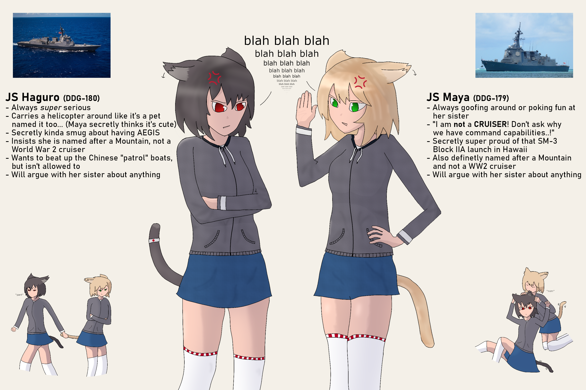
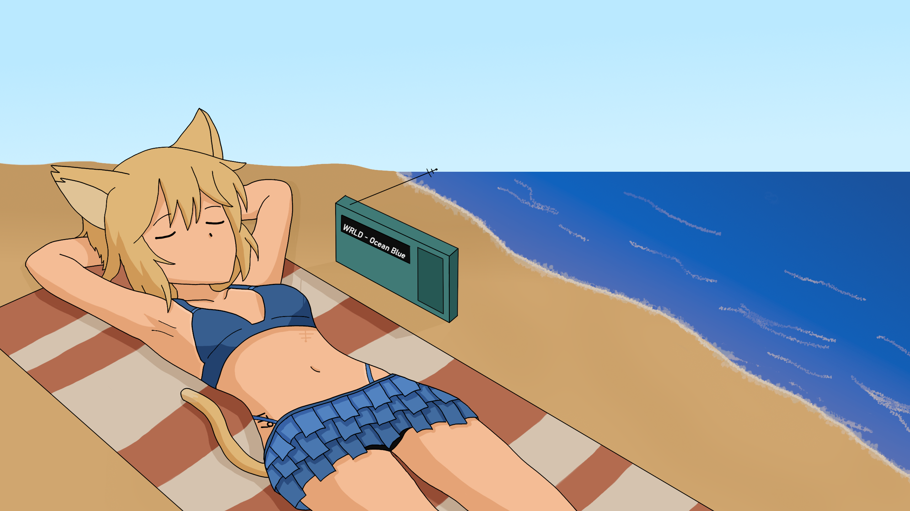

Maya
Maya (まや) is an Ajisain shipgirl and a major assisting character in the story of Keen Sword. She is often shown together with her sister Haguro. Maya's eye range from a dark green the lime with blonde hair and catears. Her tail is the same color as her hair.
She, similar to her sister, wears a grey long-sleeve zip-up jacket with white cuffs and darker grey accents at the hem, together with a simple blue miniskirt and white thigh-high socks with red lace garters.
She is as playful as Haguro but unlike her doesn't try to obscure it by trying to act serious. As a result, she is often goofing around or poking fun at her friends, something that is sometimes problematic as the smaller Destroyers like Suzunami see her as a large sister.
| Country | Ajisai |
|---|---|
| Height | 170cm | 5'7" |
| Birthday | 19 March |
| Type | Destroyer |
In Game
Not Done
Relationships
Haguro
Haguro is Maya's sister. They argue about nearly everything, even things they agree on, just to keep the argument going. Despite that, they always back each other up.
Izumo-chan
She and Izumo serve in the same fleet and are good friends. Both refer to each other with -chan.
Lhasa
Maya and Lhasa are distant with her intentionally disrepecting her on several occasions. However, this does not go to the extent as between Lhasa and her sister.
Trivia
- Her real life counterpart is the Japanese Maya-Class Guided Missile Destroyer JS Maya (DDG-179)open_in_new.
Gallery
-

Reveal Image
-

Maya at the Beach